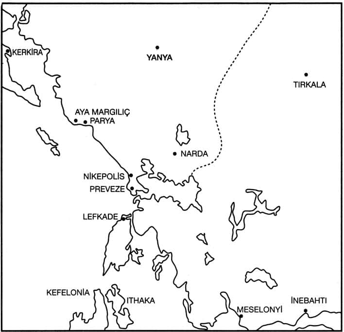

19. Yüzyıl Sonunda Suriye ve Lübnan.
Arap ülkeleri, 16. yüzyıl başında Osmanlı İmparatorluğu’nun bir parçası olmuştur. Bu bir sorunun tartışılmasını gerektirir; o da Arap ülkelerinin Osmanlı sistemine Balkanlar’a göre bir buçuk asırlık bir gecikmeyle girdiğidir. Gerçekten de Arap ülkelerinin büyük çoğunluğunda Osmanlı tımar sistemi Balkan ülkelerinde olduğu kadar yaygınlıkla uygulanmamış, mahallî otorite ilişkileri, eski hanedanlar ve gelenekler daha yoğun biçimde yaşama şansına sahip olmuştur. Gerçi bugünkü Suriye ve Mezopotamya’nın bazı kısımları bu dediğimiz istisnanın dışında kalmıştı, ama klasik Osmanlı devrinde Arap ülkelerinin pratikte belirli bir otonomiye sahip olduğu açıktır. 19. yüzyıl reformları ise, bu statüyü büyük ölçüde değiştirmiş ve idarî merkeziyetçilik Suriye başta olmak üzere diğer bazı bölgelerde de kendini hissettirmiştir. Gerçi 1845 Lübnan olaylarından sonra Bâbıâlî, Cebel-i Lübnan’a özerklik veren nizamnâmeyi Avrupa baskısıyla 1861’de kabul etmiş, 1864/1281 tarihli statüyle de bazı değişiklikler yapıp bunu yenilemişti.
Bu yenilik Lübnan’da bir hukukî özerkliğin başlangıcı ise de, modernleşen Osmanlı bürokrasisinin bölgedeki kontrolünü, Lübnan’ın klasikteki adı konmamış özerkliğine kıyasla ne derecede azalttığı düşünülmelidir.
19. yüzyılda Suriye-Lübnan’ın imparatorlukla bütünleşememe (disintegration) olayı, idarî platformda gözlenmekten çok, ekonomik değişim dolayısıyla başlar. Çünkü 19. yüzyılda Batı Avrupa’nın sanayi ülkeleri, Doğu Akdeniz bölgesiyle 17. ve 18. yüzyılda olduğundan çok daha yoğun bir biçimde ilgilenmeye başlamışlardı. Bu ilgi her şeyden önce, büyüyen Batı metropollerinin gıda ihtiyacının karşılanması, bol miktarda yeni hammadde türlerini acilen talep eden endüstrinin doyurulması ve buharlı gemi taşımacılığının ucuz mal naklini kolaylaştırmasından ileri gelmekteydi. Selanik, İzmir gibi limanların yanında, Suriye-Lübnan limanları da yeni endüstri çağı ticaretinin yoğunlaştığı ve geliştiği merkezler durumuna geldiler. 19. yüzyılın ikinci yarısından itibaren Doğu Arap vilâyetlerinin tarımsal faaliyetlerinde de buna bağlı niteliksel değişmeler görüldü. Şehirler ve şehir hayatının kurumları, nihayet kültürel ve siyasal planda ideolojik değişmeler de buna bağlı olarak hızlandı.
Modern Arap dünyasının oluşumunun temelleri 19. yüzyılda biçimlendi. Bu devir üzerindeki araştırmalar henüz yeterince aydınlatıcı olmayabilir, ama görünüşte Batı Avrupa’nın artan etkisiyle Arap dünyası, imparatorluktan kopup Batı’yla bütünleşmekteydi. Bu kopuşun hızına paralel olarak, Osmanlı imparatorluk yönetimi de, idarî, iktisadî ve özellikle kültürel ve ideolojik planda Arap vilâyetlerindeki etkinliğini artırma çabasına girmiştir.
19. yüzyılda Osmanlı Arap ülkelerinin liman şehirlerinde niteliksel ve niceliksel değişmeler meydana gelmiştir. Beyrut’un yanında, Güney Mezopotamya’da, Basra’da da bu değişme gözlenir. Özellikle Basra’nın, bu dönemde Bâbıâlî’nin geçmişe göre artan idarî kontrolüne rağmen, ekonomik bakımdan Osmanlı dünyasından kopup Britanya ekonomisi ile bütünleştiği görülür.[247] Osmanlı ülkelerinde dış dünyaya bağlı olarak gelişen bu metropoller, sadece geleneksel tarım ve zenaat ürünlerinin ihracından dolayı değil; aynı zamanda Batı Avrupa endüstrisine hammadde arz eden bir faaliyet alanının, yani monokültürel tarımın ve yarı mamul üretimin büyüdüğünü de göstermektedirler.
Limanların büyümesi, kuşkusuz hinterland üzerinde kurulan denetime bağlıdır. Osmanlı İmparatorluğu’nun dış ilişkileri kolonyal bir düzen içinde kurulmadığından, liman kentlerindeki ticaret için gerekli olan ulaşım ve depolama gibi altyapı yatırımları çeşitli Batı devletlerinin kontrolünde gelişmiştir. Örneğin, hinterlandla kurulan demiryolu bağlantısı İzmir’de İngiltere ve Fransa’nın; Anadolu’da Almanya’nın; kent içi ulaşımı da yine çeşitli devletlerden imtiyaz sahiplerinin girişimiyle kurulmuştur (Örneğin İzmir ve Beyrut’ta rıhtım Fransızlarındı). Osmanlı demiryolu sistemi Avrupa ve hatta Rusya’ya göre geç gelişmiş ve rasyonel işlerlikte bir ulaşım ağı meydana getirilememiştir. Fakat ülkede telgraf sistemi erkenden hızla tesis edilmişti. Osmanlı posta sistemi de gene devlet tekelinde gelişmiş, ancak yabancı postalar da legal ve illegal olarak faaliyet alanını genişletmişlerdir. Demek ki, posta sisteminde de tek bir ülkenin tekeli yoktu. 19. yüzyılda Suriye-Lübnan bölgesinin demiryol ulaşım sisteminde Fransa üstün durumdaydı. Ancak denizcilikte önce İngiltere’nin üstün olduğunu, sonra bir rekabet başladığını göreceğiz. Nihayet, Şam’dan güneye inen Hicaz demiryolu yerli sermaye ile kuruldu ve Fransa’nın denetim alanı dışındaydı. Demek ki, yukarıda bütün imparatorluğun ulaşım sistemi için sözü edilen bölge bölge paylaşılmış menfaat sistemi, bu bölge için de geçerliydi.
19. yüzyılda Osmanlı eyâlet örgütünün mekân düzeninde görülen değişmeler bu gelişmelere bağlıydı. Üretici ve toplayıcı merkezler, klasik dönemdekine göre değişmiş, yerleşme birimleri arasındaki mekân hiyerarşisi (spatial hierarchy) farklılaşmıştı. Demiryolları ve denizyolu (liman) ulaşım hatlarının düzeni, bütün imparatorlukta eyâlet sınırlarının ve taşra idarî merkezlerinin sık sık değiştirilmesine neden oluyordu. Nitekim, İzmir’in Aydın vilâyetinin merkezi olması (eskiden Aydın’dı), Samsun’un gelişmesi nedeniyle Canik sancağının Trabzon vilâyetinden kopması, Çukurova’da Adana’nın gelişip bazı idarî birimlerin kendisine bağlanması gibi yeni idarî mekân düzenlemelerine Arap vilâyetlerinde de bolca rastlanıyor. Cebel-i Lübnan’ın özerkliğine rağmen, Beyrut ayrı olarak düzenlenmiş, Trablusşam sancağı önemli bir idarî birim haline gelmiş, Basra bir ara ayrı vilâyet haline getirilmişti. Klasik dönemde Şam, bütün Suriye’nin en önemli idarî, iktisadî, ticarî merkeziyken bu rolünü günden güne Beyrut lehine yitirmekteydi.
19. yüzyılda Suriye limanları, Akdeniz trafiğinin önemli merkezleri haline geldi. Daha 18. yüzyıl sonunda de Volney, “Bütün Suriye sahillerinde 400 ton kapasiteli bir geminin yanaşacağı rıhtım yoktur” diyordu. Esasen aynı yazar, bu durumu açıklayacak bir başka gözlemde de bulunuyor: “Tarımla ve hayvancılıkla uğraşan halk (köylüler) hükümetin baskısı altındadır. Fakat bunlar feodalite döneminin serfleri derecesinde değildir.”[248]
Henüz büyük plantasyon çiftçiliğinin olmadığı yerde, fakir ve otarşik bir hayat sürülen köylülük düzeni egemendi. Ticaretin gelişmediği bu küçük limanlar ülkesi 19. yüzyıl başlarından itibaren çehre değiştirmeye başladı.
Dış Ticaret
Ötedenberi Akdeniz ticaretinde Suriye limanları artbölgelerle Batı Akdeniz bölgesi arasında bağlantı görevini yerine getiriyordu. Napolyon’un Mısır seferine kadar, Doğu Akdeniz ticaretinde Fransa üstünlüğünü korumuş sayılabilir. 1789’da Suriye’de yirmi civarında Fransız acentası vardı. 1830’lardan sonra Avrupa’nın endüstri lideri Britanya üstünlüğü ele geçirdi. Gerçi Britanya’nın ticarî üstünlüğü Suriye-Lübnan’da kültürel üstünlüğü de sağlaması için yeterli olmamış ve Fransa’nın dinî-kültürel etkinliği güçlü bir biçimde sürmüştür. Britanya ticaretinin gelişmesiyle bölgede, İon Adaları’ndan (Yedi Adalar), Malta’dan gelen tüccarlar gibi, Britanya uyruklu ticaret adamları da yerleşmeye başlamıştır. Bunların dışında Britanya ticaret şirketlerinin temsilciliğini alan ünlü Nakkaşlar gibi yerli aileler de vardı. İngiliz ticareti özellikle bu ikinci yolu, yerli aileleri temsilci olarak kullanmayı tercih etmiştir.[249] Beyrut doğrudan Fransız ve İngiliz ticareti ile gelişmişti. 1825’lerde bu bölgeye yapılan ithalat hacmi 4,6 milyon frank, bölgenin ihracatı 3,2 milyon frank civarındayken, 1836-38 yıllarında ithalat hacmi 14,5 ve ihracat 8,5 milyon frank düzeyine ulaştı. Özellikle İngiliz ticareti buharlı gemiler sayesinde hızla gelişti. Daha 1845’te, Beyrut’ta 365 civarında İngiliz ticaretevi olmuştu.[250] İngiliz ticaretinin 1820’lerden beri aynı hızda geliştiği ve 1838 Osmanlı-İngiliz Ticaret Anlaşması’nın bu gelişmede tayin edici rolü olmadığı anlaşılıyor. Bizzat konsolosluk raporlarından ve Britanya endüstri tarihinin gelişme aşamalarından da anlaşıldığı üzere, Britanya sanayiinin ucuz üretimi ve buharlı denizciliğin verdiği yeni imkânlar bu büyümede başlıca etkendi. Sanayi ve denizcilikte Britanya’nın karşısına Avusturya ve Fransa gibi yeni rakipler çıktıkça ticaret hacminin değişmesi kaçınılmazdı.
1828’de Britanya Ticaret Odası (Board of Trade) başkanı Huskisson tarafından verilen bir memorandumda; İngiliz Levant Company’nin 1825’te dağılmasından sonra İngiltere’nin bu bölgede hiçbir ticarî örgütlenmeyi gerçekleştiremediği, Halep’te ve Akkâ’da Fransa ve Avusturya’nın temsilcilikleri olduğu halde, İngiltere’nin sadece Beyrut’ta bir konsolosu bulunduğu söyleniyordu. 1830 Haziran’ında J. W. Farren, Lord Aberdeen’e yazdığı raporda, Şam’da bir konsolosluğun acilen kurulması gereğini, bütün Asya Türkiyesi’nde İzmir ve İskenderiye dışında bir temsilcilik bulunmadığını, bildiriyordu.[251] Gerçekten de bu yıllarda İngiltere’nin bölgedeki ticarî örgütlenmesini giderek güçlendirdiği ve resmî temsilcilerinin de çoğaldığı görülmektedir. Aynı eğilim sadece Britanya için söz konusu değildir. Osmanlı İmparatorluğu’nun pek az bölgesinde çeşitli yabancı devletler bu kadar çok konsolosluk bulundurmuştur. 1898 yılında Şam’da ve Halep’te; Fransa, Rusya, İtalya, İngiltere, Avusturya-Macaristan ve Almanya, İran, ABD, Portekiz, İspanya ve Felemenk konsoloslukları vardı. Buralarda tercüman ve memur olarak Marunîlerin yanında Ermeni, Rum ve Müslümanlar da bulunuyordu; herhalde imparatorluğun hiçbir yerinde Müslüman ahali, Avrupa ile bu kadar yoğun ilişkiler içinde değildi.[252]
Britanya gemiciliği 1830 ve 40’lardaki teknik üstünlüğünü zamanla yitirmeye başladı.[253] Öyle ki 19. yüzyılın ikinci yarısında bütün Akdeniz’de olduğu gibi burada da, Avusturya-Macaristan bandıralı gemicilik ciddi bir rakip oldu. Bizzat Britanya konsolosluk raporları bu durumu göstermektedir. Avusturya, Fransız, Mısır ve Rus ticaret filoları hükümetleri tarafından desteklenir ve İskenderiye, İstanbul gibi limanlar arasında düzenli seferler yaparken, Britanya gemileri için bu durum söz konusu değildi. Anlaşılan İngiliz gemiciliği yönünden Selanik, İzmir gibi ticaret limanlarında gözlenen durum, Beyrut limanı için de söz konusuydu. Aşağıdaki tablo bu yıllardaki ayrıntılı Britanya konsolosluk istatistiklerinden çıkarılmıştır.[254]
| Yıllar | Gemi Sayısı | Tonilato | |
| İngiltere | 1868 | 50 | 50.551 |
| 1868 | 50 | 22.268 | |
| Avusturya-Macaristan | 1868 | 60 | 36.874 |
| 1871 | 54 | 70.521 | |
| Fransa | 1868 | 73 | 72.892 |
| 1871 | 57 | 48.075 |
İngiliz ticareti, Birinci Dünya Savaşı’na kadar bölgede üstünlüğünü korumuştur. 1912 yılında ABD’nin Beyrut başkonsolusu o yılki bütün kıtlık ve sıkıntıya rağmen İngiltere’den yapılan ithalatın ilk sıradaki yerini koruduğunu bildiriyordu.[255] Bununla beraber, İngiliz ticaret kapasitesinin diğer devletlerin tersine temelde azaldığı ve istikrarsız bir gelişme izlediği açıktır. 1871’de Britanya’nın Beyrut Konsolosu Jago, Suriye’den yapılan ithalatı diğer devletlerinkiyle şöyle karşılaştırıyordu:[256]
İngiltere 692.500 sterlin
Fransa 117.000 ”
Avusturya 208.500 ”
(Alman ve Macar Mamulâtı dahil)
İtalya 89.000 ”
İsviçre 87.400 ”
ABD 83.050 ”
18 yıl sonra, İngiliz ticareti özellikle Suriye’ye yapılan ithalatta üstünlüğünü korumakla birlikte hacim düşmüştür, İngiltere’ye bu bölgeden yapılan ihracat da, diğer devletlere göre düşüktür; yani İngiltere hammadde ihtiyacını uzak kolonilerden karşılamaya devam etmektedir. İngiliz ithalat ve ihracatı arasındaki bu büyük nispetsizlik bölgede İngiltere ile ticarî ve kültürel etkileşimin düşük yoğunlukta kalmasının bir diğer nedenidir.
Bölgenin 1887-1888 yılı ticaret raporu şu görünümdedir:[257]
|
İhracat |
İthalat |
|||
|
(İngiliz sterlini olarak) |
||||
| 1887 | 1888 | 1887 | 1888 | |
| İngiltere | 12.754 | 13.991 | 201.399 | 234.671 |
| Avusturya - Macaristan | 22.556 | 20.366 | 8.249 | 18.278 |
| Almanya | 38.928 | 10.132 | 7.098 | 17.644 |
| Fransa | 46.460 | 42.006 | 45.950 | 67.260 |
1880’lerden itibaren Avusturya-Macaristan ve Almanya ticarî blokuyla İtalya’nın İngiltere için ciddi rakipler durumuna geldiği anlaşılmaktadır. Gerçekten de, daha 1861’de Britanya konsolosu Rogers bütün Suriye’de İngiliz ticaret evlerinin sayıca çok azaldığını ve Almanların ticaret evlerini ele geçirdiğini bildiriyordu. 1893’te de Beyrut’tan Trotter, Earl of Rosebery’ye Alman-Avusturya ticaret temsilcilerinin bölgede etkinliklerini artırdıklarını yazmaktaydı.[258] 1888 Mayıs’ında Britanya’nın Şam’daki konsolosu Brant, İngiliz ticaretinin esasen yerlilerin eline geçtiğini, Beyrut’taki birkaç İngiliz tüccarın temsilciliğinin geniş ölçüde yerli Rumlarca yürütüldüğünü ve hatta onların bazılarının Londra ve Manchester’da açtıkları ticaret evleri aracılığıyla şimdi İngiltere-Suriye ticaretini de ellerine aldıklarını ve yerli Rumların da İngiltere’ye ihracatı gene bu Rum ticaret evlerine yaptığını söylüyor. Diğer yandan Marsilya da Doğu Akdeniz’e gittikçe hâkim olmaktaydı. Suriye’de ticaretin tamamen Avrupalıların elinde olmadığı açıktır. Halen Şam’dan kalkan kervanların Bağdat’a kadar uzandığı biliniyor. Bu yollarla Arap ve Hint mamulleri de bölgeye ulaşmaktadır. Hatta Şam’da bazı Hintlilerin ticarethane kurduğu ve yerli Yahudi ve Müslümanlarla işbirliği yaptığı bilinmektedir.
Suriye bölgesinin bütün tarih boyu olduğu üzere, 19. yüzyılda da kozmopolit bir ticaret hayatına sahip olduğu görülüyor. Ancak bu dönemde ticaret etkisini tarım ve zenaat alanında duyurdu. Altyapı yatırımlarıyla Suriye-Lübnan bölgesinde tarım ve zenaatler, hammadde ve yarı mamul madde üretiminde niteliksel ve niceliksel bir değişim geçirmeye başladı.
Sanayi ve Tarım
Suriye bölgesinin dokuma gibi bazı mamulâtı Osmanlı iç pazarında da tutunmaktaydı. Kervan ticareti konusu olan lüks dokuma dışında 19. yüzyıldaki manifaktür ürünleri de diğer vilâyetlere sevk ediliyordu. Meselâ 19. yüzyıl sonunda Orta Anadolu bölgesinde Suriye pamuklu dokuması ve ipeklileri geniş ölçüde kullanılıyordu. Yalnız iç pazar değil, dış pazarlarda da Suriye’nin ithal kumaşlarına rastlanmaktaydı. Yani, 19. yüzyılın ikinci yarısında yerli manifaktürün bu bölgede önemli gelişme kaydettiğini söylemek abartma sayılmamalıdır. 19. yüzyılın ikinci yarısında Doğu Akdeniz sahillerinde, Mısır’da ve Anadolu’da Suriye pamuklu ve ipeklilerinin yaygın kullanımı, özellikle Hama ve Şam’da dokumacılığın gelişmesini sağladı. Ancak bu sanayi ev tezgâhlarına (Verlag-putting out system) ve küçük atölyelere dayanıyordu ve ilkel bir teknoloji kullanılıyordu. Bununla beraber 1840’lar ve hatta 1860’larda gelişip yaygınlaşan bu manifaktür, 1870’lerden itibaren duraklamaya başladı ve Avrupa’nın ucuz fabrika mamulâtıyla rekabet kabiliyetini giderek yitirdi. Hammadde fiyatlarının artışı, ödeme ve kredi imkânsızlıkları bu çöküşte rol oynadı.[259] 19. yüzyıl başından 1850’lere kadar Suriye’de hızlı bir enflasyon gözlenmiştir.[260] Bu enflasyon, yavaşlayarak Birinci Dünya Savaşı’na kadar sürmüştür. Bununla beraber, sözü geçen enflasyonun şiddetini o çağın Avrupa’sıyla kıyaslamak mümkün değildir. Aynı şey işçi ücretleri için de söylenebilir. Suriye’de ücretler Orta ve Batı Anadolu’ya göre düşük düzeyde olmakla beraber, Avrupa’daki işçi ücretlerine göre hatırı sayılır derecede yüksekti. Bu ön planda şehirleşmenin çok düşük hızda olmasından ve manifaktürde çalışmayı talep eden geniş işçi gruplarının oluşmamasından ileri gelmekteydi ve Osmanlı İmparatorluğu’nun bütün Doğu vilâyetleri için geçerli bir durumdu.
1840’lara kadar Suriye dokumacılığı zenaatkârlık düzeyinde olup lüks emtia üretimine yöneliktir. 1840’lardan itibaren atölye sistemine geçilmeye başlandı. Britanya konsolosu Moore 1857’de, “Birkaç yıl öncesine kadar Suriye ham ipeği düşük kaliteydi, fakat şimdi birinci kalite İtalyan, Fransız ipekli kumaşlarıyla rekabet edebiliyor” diyordu. Gene Suriye’de, Mısır ve Amerika’nın tersine susuz tarımla pamuk üretilebiliyor ve bu da kuşkusuz fiyatın ucuzluğunu sağlıyordu.[261] Bir Fransız işadamı 1840’ta Cebel-i Lübnan’da ilk dokuma atölyesini kurdu. Buhar gücünün uygulandığı ilkel tezgâhlarla yaygınlaşan ipek manifaktürü yer etmeye başladı. 1870’lerde Fransız işletmeciler ipek dokumacılığında 1200-1250 kişiyi çalıştırıyorlardı. İşçilerin çoğu genç kızlar ve kadınlardı. Konsolos Jago’nun raporuna göre ipekçilikte kullanılan işçilerin yarıdan çoğu Marunî-Katolik, %15 kadarı Rum-Ortodoks-Arap, diğerleri de Melkit ve Dürzî idi. Bölgenin iç kısımlarındaki halk ve özellikle Müslüman nüfusun ücretli işçi olmadığı görülüyor.[262] Dokumacılıktaki el tezgâhı teknolojisinde hiçbir gelişme görülmemiştir. Sonraki yıllarda da (meselâ 1887’de), ticarî raporlar, manifaktür merkezleri olarak yine Hama, Şam gibi yerleri saymakta, ipekli ve pamuklu dokumaların gene pazarlara ve seyyahlara satıldığını belirtmektedirler.[263] Tamamen mahallî özelliklere ve zevke göre dokunan mamulât, ülkede aynı nedenlerden dolayı bir talep yaratmıştı. Bunun dışında büyük endüstrinin ucuz mamulleriyle Suriye’de ve diğer Osmanlı vilâyetlerinde bile rekabet edemediğinden üretimde daha fazla bir artış söz konusu olmamaktaydı. Dokumacılıkta kayda değer bir teknolojik değişme ise görülmemiştir. Bununla beraber Suriye-Lübnan’ın ihracında mamul halde ipekli kumaş, pamuklu ve yünlü dokumalar en büyük kalemi oluşturmaktaydı.[264] O kadar ki, Süveyş Kanalı’nın açılmasına ve Çin ipeklisinin daha ucuz nakledilmesine rağmen, Çin’in ipek sanayii Suriye’ye ciddi bir rakip olamadı. 1871 yılının 717.401 sterlin tutan ihracatında; koza, ham ipek ancak (53.810+17.346) sterlin tutarındadır. Ham ipek ve yün ihracatı yarı mamul madde halinde ihraç edilme aşamasına gelmiştir. (Aynı yıl 214.340 sterlin tutarında ipekli ve 115.800 sterlin tutarında yünlü dokuma ihraç edilmiştir.)
Buna karşılık, İngiltere’den ucuz Manchester dokumaları, elbise, madenî eşya; Fransa’dan ipekli kumaş, kahve, şeker; İtalya’dan saten, mermer, kâğıt ve hırdavat; Avusturya ve Almanya’dan ucuz cam ve porselen eşya gelmektedir (Fransız ve İngiliz ithalatı bu alanlarda İtalya ve Alman-Avusturya blokuyla rekabet kabiliyetini yitirmekteydi).[265]
Gelişkin bir ticaret ve sanayii beslemek için Suriye tarımı henüz hazır değildi. 1870’lerde Jago, “Suriye henüz bereketi ve iklimi ölçüsünde bir tarımsal gelişme göstermedi” demektedir. Tarım teknolojisi Roma devrinden beri pek az, hatta hiç değişmemişti. Bir çift öküz ve sabanla sürülen, ilkel bir sulamadan veya hiç sulama imkânlarından yararlanamayan topraklar büyük ölçüde yağış ve iklim değişikliklerine bağlı olarak az veya çok ürün vermektedir. Genellikle buğday, darı ve arpa bütün tarım hasılasının yarısından çoğunu oluşturmaktadır. Susam, zeytin, tütün, pamuk gibi endüstri bitkilerinin tarımı henüz gelişmektedir.
|
1871 Yılı Tarım Ürünlerinin Dağılımı[266] |
|
| Ürün | % |
| Buğday | 40 |
| Arpa | 9 |
| Darı | 7 |
| Susam | 13 |
| Pamuk | 6 |
| Sebzeler | 5 |
| Tütün | 2 |
| Meyva | 4 |
| Zeytin | 14 |
Kurumsallaşmış tarım kredi mekanizması var olmadığı gibi, sübvansiyon ve vergi bağışıklığı gibi tedbirler de söz konusu değildi. Tefeciler %25-40 gibi yüksek faizler almaktaydılar. İlginçtir, Britanya konsolosu Jago, burada bir ziraat bankasının gerekli olduğunu söylüyor. Sözü edilen bankanın temeli olan mal sandıkları, o yıllarda Tuna vilâyetinde faaliyete geçmişti ve sonraları Suriye’ye de aynı vali (Midhat Paşa) tarafından getirilecektir. Bölgede hayvancılık yapılabileceği halde gelişmemiştir ve sadece Beyrut vilâyetinin (Sayda) limanına yapılan ithalatın en büyük birimi yıllık 11-12 bin sterlin tutarında deriydi.[267] Bununla beraber 1880’lerden sonra Osmanlı politikasının yeni bir uygulaması, bölgede bazı sonuçlar vermekte gecikmedi. Midhat Paşa’nın Tuna vilâyetindeki deneyimi, yani yoğun biçimde Kafkasya muhacirlerinin yerleştirilmesi, boş toprakların işlenmesi, büyükbaş hayvan yetiştirilmesi, tarımsal ürünün artmasını sağladı. Britanya’nın Şam’daki konsolosu Dickson, 1888’de özellikle Şam’ın güneyinde Cevlan bölgesine yerleştirilen Çerkes muhacirlerle bölgede boş toprakların işlendiğini ve tahıl üretim ve pazarlamasının arttığını bildiriyordu.[268] Suriye tarımındaki bu gelişmelerin, özellikle başlıca zenginlik kaynağı olan ipeğin Osmanlı hazinesine yansımadığı açıktır. Zaten Ocak 1880’den beri bölgenin tuz resmi, ipek ve balık rüsûmu gibi gelirler, Galata bankerlerine ve sonra Düyûn-ı Umûmiye’ye terk edilmişti.
Ticaret ve tarımın gelişimini kolaylaştıracak karayolu şebekesi bölgede ihtiyaçlara cevap verebilecek biçimde kurulamamıştır. Beyrut-Şam arasında bir Fransız şirketi tarafından 1858’de yapımına başlanan şose, 1862’de bitmişti. Yafa-Kudüs arası bir yol ise, yapılan masrafa rağmen, bilgisizlik yüzünden tamamlanamamış ve kullanım dışı kalmıştır. Cebel-i Lübnan’daki yollar ise, ticaret ve yoğun ulaşımdan çok, yöneticilerin ve zabtiyenin kullanımı için düşünülmüştü. Ancak 1880’lerde, Hama-Şam ve Trablusşam arasında posta işleyecek bir karayolu tamamlanmıştı. Bölgede haberleşme büyük ölçüde telgraf sistemine, taşımacılık da kervanlara dayanıyordu. Esasen bölgede demiryolları yapıldıktan sonra da kervanlar demiryoluyla iç bölgenin bağlantısını sağlamaya devam etti.
19. yüzyıl sonunda Almanya’ya verilen Anadolu-Bağdat demiryolu imtiyazı Fransa’yı bölgede demiryolu imtiyazı elde etme ve yapımına teşvik etti. 1892’de Yafa-Kudüs, 1894’te Şam-Muzarib, 1895’te Beyrut-Şam, 1898’de Beyrut-Maalmetein, 1902’de de Rayah-Humus-Hama demiryolu hatları döşendi. Bu hatlar Yafa ve Beyrut limanlarıyla hinterlandın ulaşımını sağladı. Şam’dan başlayarak Medine’ye ulaşan Osmanlı Hicaz demiryolu ise, 1901-1904 arasında tamamlanmıştır. Bütün imparatorlukta rasyonel olmayan ve ayrı devletlerin nüfuz bölgelerine göre döşenen bir demiryolu ulaşımı vardı. Bununla beraber Suriye-Lübnan bölgesinde özellikle Hicaz hattının da yapımıyla bütün imparatorluğun en faal ve yararlı ulaşım sağlayan demiryolu şebekesinin kurulduğunu belirtmek gerekir. Böylece tarım ve zenaatların dış ticarete açılması oldukça kolaylaşmıştı. Fakat aynı bölgenin Anadolu ile ne demiryolu ne karayolu ne de denizyoluyla bütünleşemediği açıktır.
* * *
16. yüzyılda Osmanlı fatihleri Arap dünyasını yan yana yaşayan fakat birbirine kapalı dinî, etnik cemaatlerden oluşan heterojen bir yığın halinde buldular. Arapların, Akdeniz’in uzun uygarlık tarihi içinde oluşan bir birliği vardı, ama aynı tarihin getirdiği kurumsal ayrılıklar daha çok göze çarpıyordu. 19. yüzyılın ikinci yarısında bu ayrılıklar, bir yandan kanlı çatışmalara dönüştü, buhranlar yarattı; diğer yandan, bir kültürel kaynaşma da birlikte doğdu. Bu kültürel kaynaşma Arap ulusçuluğu diye adlandırılmaktadır, ama gerçekte Batı dünyasının kültürünün ve eğitiminin getirdiği yeni değerler etrafında oluşan, yarı batılı-yarı laik yeni bir kurumlaşma söz konusuydu. Bu kurumlaşma, dinî inançları, hukukî ilişkileri, ticaret hayatını, eğitimi, politikayı ve yaşam biçimini derece derece kapsamıştır ve sözü edilen kurumlaşmanın gelişme ve yayılmasına paralel olarak da modern Arap seçkinleri yeni sorunlarla dolu yeni bir Arap dünyasının doğuşuna öncülük etmişlerdir. Kuşkusuz Osmanlı yönetimi de, 16.-18. yüzyıllardaki Arap vilâyetlerine göre çok değişen yeni bir Arabistan kıtasının yönetimini düzenlemek gibi bir işlevle aynı buhranlı atmosferin içindeydiler.
Yeni Vilâyet Düzeni-Nüfus ve Sınırlar
Osmanlı döneminde Suriye-Lübnan bölgesinin nüfusunu ve bunun etnik-dinî kompozisyonunu kesinlikle vermek mümkün değildir. Bir bakıma bürokratik kayıtlar, nüfus yazımı yönünden Osmanlı bürokrasisi hatta Çarlık Rusyası ile karşılaştırılamayacak kadar ilkel ve eksik yöntemlerle çalışmaktaydı. Bununla beraber, Osmanlı idaresinin yaptığı nüfus sayımı, hem o günlerdeki Batı Avrupalı seyyahların, araştırıcıların (V. Cuinet gibi) ve konsolosların tek kaynağıdır, hem de bugünkü tarih araştırmacılarının... Bir ihtimal gayrimüslim cemaatlerin kendi özel kayıtlarını bulmak ve taramak çözüm olabilir. Ama ahalinin ancak bir kesimi hakkında doğru bilgi verebileceği şüpheli bu kaynaklardan yararlanmak da gün geçtikçe imkânsızlaşmaktadır. Vergi ve angarya gibi yükümlülüklerden kurtulmak için, her cemaat, her köy ve mahalle üyelerinin nüfusa kaydını mümkün mertebe önlüyordu. Bu bütün imparatorlukta olduğu gibi Suriye’de de böyleydi (1900’lere ait bir konsolosluk haritası büyük kentlerin nüfusunu da göstermektedir, veriler için bkz. s. 174).
|
ERKEK NÜFUS (18-50 YAŞ ARASI) 1880 YILI |
||||||||||
| Sancak | İslâm | Rum Ort. | Marunî | Grek Kat. . | Protes. | Süryani | Ermeni | Ermeni-Katolik | Latin | Musevi |
| Şam | 90.000 | 9.500 | 2.500 | 9.000 | ||||||
| Beyrut | 31.000 | 6.000 | 4.500 | 2.500 | ||||||
| Hama | 43.000 | 8.500 | - | 500 | ||||||
| Trablus | 35.000 | 13.000 | 5.000 | - | ||||||
| Lazkiye | 13.500 | 1.000 | 800 | - | ||||||
| Akkâ | 22.000 | 3.000 | 700 | - | ||||||
| Belka | 53.000 | 1.000 | - | - | ||||||
| Yekûn | 292.463 | 40.051 | 13.326 | 1.548 | 785 | 1.591 | 487 | 143 | 494 | 3.079 |
19. yüzyılda bugünkü Lübnan’ın önemli bir kısmı (Beyrut ve çevresi hariç) Cebel-i Lübnan özerk mutasarrıflığı olarak doğrudan İstanbul’a bağlıydı. Gene daha güneydeki Kudüs-ü Şerif ve civarı da merkeze bağlı bir mutasarrıflıktı. Cebel’in ortasındaki Beyrut, güneydeki Hayfa ve Akkâ, kuzeydeki Lazkiye ve Trablusşam sancaklarıyla birlikte Beyrut vilâyetini oluşturuyordu. Doğu’da Şam şehri (250.000 nüfuslu en büyük şehir) merkez olmak üzere Suriye vilâyeti ve kuzeydoğuda da Ayıntab ve Antakya’yı da içeren Halep vilâyetini de sayarsak coğrafi yönden klasik Suriye-Filistin ülkesini tamamlamış oluruz. 19. yüzyıl sonunda bölgede şehirleşmenin yoğunlaştığı tipik merkez 150.000 nüfusla Beyrut’tu ve şehrin etrafında sefalet mahalleleri oluşmuştu.
Bölgede Sünnî-Şîî ayrımı vardı; fakat Şîîler bir mezhep veya millet statüsünde değildi. Dürzîler, Nusayrîler gibi gruplar da fiilen var olan cemaatlerdi; fakat onlara da aynı muamele uygulanıyordu. Marunî ve Melkit (Grek-Katolik) Hıristiyan cemaatlerin dışında Ermeniler, Latin cemaati ve Museviler bulunuyordu. Kuşkusuz bu tabloya Tatar ve Çerkes muhacir gruplarını da eklemek gerekir, buna rağmen Babil kulesi kalabalığının tam olarak tasvir edildiğini söylemek güçtür. Sadece Beyrut-Suriye bölgesinin 1.200.000 nüfusu bulunduğu (1880 yılı), bunun 300.000 kadarının gayrimüslim olduğu anlaşılıyor. Beyrut ve listede yer almayan özerk Cebel’de nüfus Hıristiyanlar lehineydi. Britanya viskonsülü Jago’nun raporundan 1880 için elde edilen sonraki sahifedeki nüfus tablosu, resmî sâlnâmelerle de aşağı yukarı uyum içindedir. Sadece erkek nüfusun dinî cemaatler (millet) ayırımına göre verilişi, Jago’nun bunu sâlnâme ve diğer sözlü-yazılı resmî kaynaklara dayanarak hazırladığına bir delildir.[269]
Trablusşam ve Lazkiye’de çoğunlukta olmak üzere Nusayrîler 24.000, Dürzîler 8.000, Mutevellîler 4.500 kadar nüfusl rıydı. Listedeki 18-50 yaş arası vergi mükellefi sayılan erkek nüfus 408.819 olarak verilmiş. Böylece Cebel-i Lübnan hariç bölge nüfusu 1.200.000 civarında olmalıdır. Bu dönemde 1316/1898-99 yılı Osmanlı sayımına göre Halep vilâyetindeki nüfus ise şöyleydi:[270]
Halep (Halep-Urfa-Maraş Sancakları)
İslâm.............704.594
Hıristiyan........97.562
Musevi.............9.439
Diğer...............3.728
Toplam........815.323
Halep şehrinde de nüfusun % 60 kadarı Müslümandı. Bununla birlikte Halep vilâyeti bütün bölgede en kozmopolit kısımdı ve Arapça ve Türkçeden sonra Fransızcanın birtakım gruplarca üçüncü dil olarak kullanıldığının resmî vesikalarda gösterildiği görülmektedir.
Osmanlı ülkeleri içinde Suriye-Lübnan, en erken yurtdışına işçi göçü olayını yaşayan ilginç bir bölgeydi. Britanya’nın Beyrut’taki başkonsolosu Colonel Trotter 1893’te, bir yıl evvel 4.500 Lübnanlı’nın Yeni Dünya’ya göçtüğünü, bunlardan 2.500’ünün Brezilya, 500’ünün ABD ve 500’ünün Avustralya’ya dağıldığını söylüyor. Gidenlerin bir kısmı bazen geri geliyorsa da, Yeni Dünya’daki Lübnanlı azınlık o zamanlar oluşmaya başlamıştı. Giden işçiler ülkelerine para da gönderiyordu. 1891 yılında bölgeye bu yolla 120.000 sterlin girmiştir.[271] ABD’de de göçmenlerin Osmanlı konsolosları için başlıca problem olduğu, bu fakir tabakanın buna rağmen yeni ülkelerinde örgütlenmeye başladığı da bildiriliyor. New York’ta Kewkab-ı Amerika diye bir gazete çıkarılıyormuş. Gidenlerin işsizlik ve para sıkıntısı kadar, askerlik hizmetinden (?) kurtulmak için gittiği de not ediliyor.[272]
Kozmopolit nüfusun içinde sayıları bir hayli çok ve kalabalıkça olan gayrimüslim cemaatleri kontrol altında tutmak için Osmanlı yönetimi ruhanî reislere tam yetki vermiştir. Bu bölgede ilk İslâm egemenliğinden beri bin yılı aşkın bir süre, Hıristiyan ve Musevi nüfus bu tür bir sisteme de alışkındı. Ancak, Fransa’nın 17. yüzyıl sonundan beri Fransiskenler ve Cizvitler aracılığı ile Katolikliğin, İngiltere’nin 19. yüzyılda Protestanlığın yayılması için gösterdiği faaliyet bu dengeyi bozdu. Nihayet, Rusya’nın kendine bağlı bir Ortodoks cemaat yaratma girişimleriyle, Suriye-Filistin dinî çekişmeler yönünden en problemli bölge oldu. 1824’te Amerikan misyonerleri Beyrut’ta ilk özel okulu açtılar. Kısa zamanda ruhsatsız olarak açılan okul ve yetimhaneler ile Amerikalılar Suriye-Filistin, Mezopotamya ve Doğu Anadolu’da en etkin misyoner grubu oluşturdular. Açtıkları kurum sayısı 400’ü geçti.[273] Bu hiçbir Avrupalı misyonun ve yerli Hıristiyan cemaatin eğitim etkinliğiyle karşılaştırılamayacak bir başarıydı. Amerikalı Protestan misyonerlerin etkinliği imparatorluğun her yerinde diğer Hıristiyan cemaatlerin tepkisine neden oldu. Suriye-Lübnan’da da Marunî, Latin, Ermeni-Katolik, Rum-Ortodoks ve Rum-Katoliklerin tepki ve şikâyeti başladı. Osmanlı yöneticileri bu huzursuzluğu ve protestoyu dindirmek için teşebbüse geçtiğinde, Amerikalı misyonerleri, Britanya konsolosları himaye etmeye başladı. İngilizler, Dürzîlerin arasında Amerikalıların rahatça çalışmasını da temin ettiler.[274] Fransa, Cizvit ve Fransiskenleri koruduğundan Halep’te tutundular. Antakya Rum-Ortodoks patrikliğine bağlı cemaatler de Rusların himayesini gördü.[275] Bölgedeki dinî cemaatler arasında 19. yüzyıldaki modern kurumsallaşma ve dış devletlerin müdahalesiyle çatışma yaratacak bir ayırımcılık başladı.
1860’lardan itibaren yeni Vilâyet Nizamnâmesi ile başlayan idarî örgütlenme, bilindiği üzere vilâyet, liva, kaza idare meclislerinde ikişer tane gayrimüslim ve müslim nüfusun temsilciliğini yapacak seçimli üyeler bulunmasını öngörüyordu. Bundan başka, o yerin ruhanî reisleri de idare meclislerinde tabii üye olarak bulunacaklardı. Suriye-Filistin’de bu kozmopolit kurala dikkat edilmiş ve idare meclisleri rengârenk bir Babil Kulesi veya Ruhban Şûrâsı’na dönüşmüştür. Osmanlı vali veya mutasarrıfı genel olarak bu kozmopolit yapıdan mahallî temsilcileri malî sorunların çözümüne destek olarak kullanmak ve birbiriyle anlaşamayan bu cemaatlerin ortasında bir “Arbiter mundi Ottomanorum” rolü oynayarak kendi bildiğini dikte etmek için faydalanmıştır. Tanzimat sonrası Osmanlı yöneticisi klasik dönemdeki selefleri gibi güçlü değildi, ama daha politikacıydı. Vali her şeyden önce askerî gücü elinde tutan kumandanla da bir denge kurmak durumundaydı. Midhat Paşa’nın Suriye valiliği sırasında başlıca sorunu buydu. Sorumlu olduğu asayişi sağlayacak asker, Suriye ordu kumandanı olan müşirin elindeydi ve ona söz geçiremiyordu.
Sadece idare meclislerinde değil, ziraat-nâfıa komisyonu, mal sandıkları, temyiz dîvânı gibi kurullarda da mahallî cemaatlerin temsili, bir tür politik dengenin sağlanmasına yardım ediyordu. 19. yüzyıl valisinin diğer bir sorunu olan yabancı konsolosların Hıristiyanların himayesi gerekçesiyle dahilî işlere karışması da, bu kozmopolit kurulların sözde müzakere ve aldıkları kararları gerekçe gösterilerek önlenebiliyordu. Üstelik buraya gelen üyelerin ahali üzerindeki nüfuzundan yararlanmak ve onları sadık devlet hizmetkârı haline getirmek mümkündü. Valinin kararlarına uyup olumlu davrananlara, hükümetin isteği doğrultusunda çalışanlara nişan ve rütbe dağıtılıyordu. 1898 yılı Halep Sâlnâmesi’nde, vilâyetin önde gelenleri ve eşrafından memur olmayıp da nişan ve rütbe alanların isimleri veriliyordu. 30’dan fazla kişinin içinde 7 gayrimüslim var. Birinci Meclis-i Meb’ûsân’a Halep mebusu olarak gelen Nikola Nakkaş Efendi de böyle nişan alanlardan biriydi.[276] Bu aileden Maron Nakkaş’ın Arapça kaleme alıp icra ettirdiği Harunü’r-Reşid piyesi için taltif edildiği de görülüyor. 1898 yılında kendilerine hizmetleri karşılığı nişan ve rütbe ihsan edilen Halep’in ünlü ailelerinden Cabirîzâdeler 1863 yılında hükümetin gözünde makbul kişiler olmadıklarından olacak, ailenin iki ferdi, Ali ve Veysi efendiler süresiz olarak Bursa’ya sürülmüşlerdi.[277] Geçen zaman Cabirîzâdelere herhalde vali paşalarla iyi geçinme gereğini öğretmiş olacaktır. Ama valinin ve kaymakamın kontrol edemeyeceği küçük yerleşme birimlerinde bu gibi kozmopolit nitelikli idarî meclislere müsaade edilemezdi. Nitekim Rumeli’de olduğu gibi, Suriye-Lübnan bölgesinde de nahiye idarelerinin sayısı artırılmadı. Nahiye meclislerinin yerel iktidarı ele geçirmeleri hiç istenmiyordu. Bu konuda Cebel-i Lübnan gibi özerk bölge tek istisnaî uygulama alanı oldu. Orada da cemaatler arası karşıtlık ve çatışma nahiyelerin gerçek özerkliğini nasıl olsa engelleyecekti. Osmanlı taşra idaresindeki reformun imparatorluğun parçalanmasını önlemeye yöneldiği açıktı. Nahiyelerde özerk yönetim, istenmeyen siyasî sonuçlar verebilirdi. Ama modern beledî örgütlenme ve faaliyet için aynı şey söylenemez. Suriye ve Lübnan’ın önemli liman şehirlerinde ve toplayıcı merkezlerinde belediye örgütü ve modern şehir hizmetleri, imparatorluğun İzmir, Selanik gibi kozmopolit şehirlerinde görüldüğü üzere, dış ticaret faaliyetine yönelik altyapısal tesislerin, liman hizmetlerinin gerçekleştirilmesi olarak anlaşılmalıdır. Bölgede Şam, Beyrut, Halep, Trablusşam gibi merkezlerde belediye örgütü bütün imparatorluktaki ilk belediye örgütleri arasında sayılmalıdır. Bu gibi kentsel altyapı hizmetleri ön planda yabancı şirketlere verilen imtiyazla getiriliyordu. Şam ve Beyrut’ta tramvay ulaşımı 1897’de gerçekleştirilmişti. Hatta havagazı gibi bir modern hizmet Nablus gibi daha küçük merkezlere de getirilmişti. Tanzimat yöneticilerinin kent merkezlerinde idare binaları yaptırmak, bazı meydanları modernleştirip genişletmek gibi geleneksel faaliyetleri bölgede büyük şehirlerde de görülür. Meselâ, 1863 yılında Rüşdü Paşa’nın Suriye valiliği sırasında Şam’da şehrin etrafındaki bataklıklar kurutulmuş, ama bu iş galiba pek de başarılı ve ehliyetli biçimde yapılmadığından çok masraflı olmuştu.
Aynı vali sokakları genişletip, şehrin önemli bir kısmını atlı-araba trafiğine açmıştı.[278] Midhat Paşa zamanında bu tür faaliyetler göze çarpar. Şam, Beyrut’la ve artülkeyle yapılan ulaşımın merkeziydi ve bu nedenle Kapalıçarşı (Suk Hamidiyye) ve depo-antrepolar kurulmuştu. 1900’lerde Şam, Hicaz demiryolunun en büyük istasyonuydu ve şehir, limanlarla ve bütün merkezlerle demiryolu bağlantısı olduğundan gelişmeye devam etti.
Osmanlı modernleşmesinin idarî merkeziyetçiliği tamamıyla gerçekleştirdiğini söylemek güçtür. Bütün Suriye vilâyetinin asayişi 1880’lerde atlı ve piyade bin kadar zabtiyeye bırakılmıştı. Halen büyük kesimde mahallî liderler, bedevî kabile şeyhleri asayişten sorumluydu.[279] Hükümetin bütün adlî ve polisiye olayları kontrol ettiği şüphelidir. 1301 yılı istatistiklerine göre Suriye vilâyetinde suç sayısı:[280] cinayet: 70, hırsızlık: 13, gasp: 6, ırza geçme: 18 ... Bu rakamlar adlî olayların büyük kısmının adliye örgütünün bilgisi ve muamelesi dışında kaldığını gösterir. Bürokrasinin toplumsal hayata müdahalesi her yerde olduğu gibi zayıftı ve rüşvet ve yolsuzluk, kapalı cemaatleri “kendi işini kendin gör” tutumuna itmişti.
Eğitim ve İdeoloji
Berlin Kongresi’nden sonra Osmanlı İmparatorluğu Balkanlar’daki Slav ve Ortodoks tebaasının çoğunluğunu kaybetmişti. İmparatorluk hayatına bundan sonra Anadolu ve Arap vilâyetlerindeki tebaasıyla devam edecekti. II. Abdülhamid döneminin eğitim politikası bu unsurları kazanmaya yönelikti. Bu nedenle modern eğitim kurumlarının yayılmasına çalışıldı. Ancak Suriye-Lübnan bölgesindeki eski gayrimüslim cemaatlerin eğitim alanındaki girişimleri, belki öyle bir politika ile etkisiz kılınabilirdi, ama 19. yüzyılın başından beri Amerikalı, daha önceden Fransız, sonraları Rus, İtalyan, Alman, Avusturyalı ve İngiliz misyonerlerin kurduğu eğitim kurumları, modern eğitim alanını Osmanlı yönetiminden çok önce parsellemişti. Özellikle Fransız Katolik rahiplerin ve Amerikalı Protestan misyonerlerin kurduğu eğitim kurumlarının yaygınlığına ve başarısına değinilmişti. Basın ve yayın hayatında da aynı nitelik gözlenmektedir. Özellikle 1870’lerden sonra Osmanlı yönetimi, gazete ve kitap yayını yoluyla resmî ideolojiyi aşılamak istemekteydi. Ancak bölgede yabancı yayınevleri, yabancı dilde gazeteler daha önceden vardı ve giderek bağımsız Arap gazeteciliği ve yayıncılığı da toplum hayatına girdi.
Arap ulusçuluğu, doğuş ve yükselme dönemindeydi. Henüz bağımsızlık isteyen sesler zayıftı ve taraftar toplayamayacak düzeydeydi. Hıristiyan veya Müslüman olsun, Arap ulusçuları bu dönemde eşitlikçi bir özerklikten yanaydılar. Arap ulusçuluğunun önde gelen simalarından İbrahim el-Yazıcı (Nasif Yazıcı’nın oğlu) ayrılıkçı bir ulusçuydu, ama İkinci Meşrutiyet yıllarına kadar Araplar arasında bu gibi fikirlerin pek yayılmadığı ve taraftar toplayamadığı bir gerçektir. Ne var ki Bâbıâlî’nin, daha doğrusu Yıldız Sarayı’nın İslâmcı ve Osmanlıcı politikası, aşırı merkeziyetçiliği amaç edinen bir idarî mekanizmadan vazgeçemiyordu. II. Abdülhamid, Midhat Paşa’nın Suriye’deki aktif ve haklı olarak yetki talep eden idareciliğini bile, özerklik ve hatta bağımsızlık isteği olarak yorumlamıştır. Böylece, Hamidiyye İslâmcılığı, Arap ülkelerinde daha başından başarısızlığa mahkûm olmuştur. Sultan II. Abdülhamid’in gerek Arap dinî ve etnik önderlerine yaklaşma politikası güttüğü gerekse bayındırlık ve eğitim alanında Arap ülkelerine yönelik yatırımlara giriştiği açıktır. Hatta devlet hizmetinde Arap asıllıların bu devirde daha geniş ölçüde kullanıldığı da gerçektir.[281] Bununla beraber, Arap düşüncesini ve politikasını etkileyen ve etkilemeye aday olan liberal Arap aydınları otokratik yönetimden hoşlanmıyorlardı ve modern Arap panottomanizmi, II. Abdülhamid’in ortaya koyduğu Osmanlılıktan uzaklaştı. Raşid Rida, Abdurrahman Kevvakebî gibi modern İslâmcılar, aynen Namık Kemal ve Mizancı Murad gibi düşünüyorlardı. Bunlara göre, “meşveret” bulunmayan, yani demokratik kurumlara sahip olmayan bir İslâmizm’den ve İslâm toplumundan söz edilemezdi. Rida’nın ve Kevvakebî’nin ideali daha öteye uzanıyordu, bir federasyon...
Arap ulusçuluğunun ilginç önderlerinden Butrus el-Bustânî, Âli ve Fuad paşaların Osmanlıcılığını benimsemişti. Çünkü dinlere ayrılmış Suriye’de Osmanlıcılık ona her şeyden önce Suriye’nin birliğini ve Araplığını sağlayacak gibi görünmüştü. Şiveler kullanılmamalı ve Arapça yazılmayan ölü bir dil olarak kalmamalıydı.[282] 1860’ta Beyrut’ta kurulan “el-Cemiyyet es-Suriyye el-İlmiyye”ye, başta Fuad Paşa olmak üzere, bazı Osmanlı devlet adamları da şeref üyesi olduğuna göre,[283] bu tip bir Osmanlıcılık sempatiyle de karşılanıyordu. Butrus el-Bustânî laik bir ulusçuydu. Bu laik Arap ancak Osmanlıcı bir politika içinde Araplığın yüceltilip birleşebileceği inancını taşıyordu. Yabancı misyon okullarında okuyan Araplar edebî, tarihî metinleri değerlendirmeyi, yabancı dildeki edebiyatı izlemeyi öğrenmişti. Suriye Protestan Koleji ve Cizvit Koleji (Fransız) bu gibi tanınmış iki eğitim kurumuydu. Modern Arap tarihçiliği ve edebiyat araştırmalarının daha çok bu laik veya yabancı eğitim görmüş Hıristiyan Araplar tarafından gerçekleştirilmesi bir rastlantı değildir. Suriye-Lübnan kozmopolit bir kültür ortamıydı ve bu renklilik içinde modern Arap ulusçuluğu gelişti. Bustânî’nin daha 1875’te kurduğu cemiyetin üyeleri, 1879-80’de Beyrut sokaklarında mitingler yapıyor, Suriye-Lübnan’ın birleşmesini ve özerkliğini istiyorlardı. Bu birlik isteği hep tarihî bir özlem olarak kalmış, gerçekler ise bunun dışında gelişmiştir.
Arapların ulusçu ve özerklikçi İslâmcılığına veya Osmanlıcılığına karşı II. Abdülhamid, Halep’in ünlü Rıfaî şeyhi Ebulhüdâ’yı resmî İslâmcılığın sözcüsü ve propagandacısı olarak kullandı. Bu gibi kendine bağlı çevrelerle yekpare ve otokrat bir İslâmcılığın tutunmasını sağlayacak ve adem-i merkeziyetçi gelişmeleri önlemeye çalışacaktı. Bu gayretlerinin kalıcı olmadığı ama bir dönem için başarılı olduğunu belirtmek gerekir.
Hamidiyye döneminin Suriye-Lübnan’ın bütünlüğünü sağlama için yaptığı en önemli girişim eğitim alanında olmuştur denebilir. Mevcut sibyan mekteblerinin ıslâhı, kız ve erkek rüşdiyeleri açmak, idadiye ve sultaniyeler kurmak bu politikanın sonucudur. Bunların yanı başında sanayi mektepleri de açılmıştır. Özellikle Midhat Paşa bu sonuncuların yayılmasına, diğer valiliklerinde olduğu gibi, gayret göstermiştir. Gayrimüslim cemaatlerin kurmuş olduğu eski geleneksel okullar üzerinde de resmî kontrol kurulmuştu. Ama böyle bir kontrol, kapitülasyonlardan yararlanan yabancı misyon okulları için söz konusu değildi. Modern okulların yayılışı dönemin sâlnâme türü resmî belgelerinde de görülür. Meselâ, 1899’da Halep’te bir idadî, 20 rüşdiye (kız ve erkek) ve askerî rüşdiye vardı.[284] Ama Ermeni, Rum, Protestan, Katolik mektepleri daha eskiden açılmıştı. Yine Şam ve kazalarında 3 erkek idadîsi, 1 kız rüşdiyesi açılmıştı. Ama 8 Fransız ve 1 İngiliz mektebi ile 13 Amerikan okulu vardı ve yeni açılan okulların bunlarla rekabeti zordu. Yine 1882’de, Beyrut’ta birkaç askerî ve mülkî rüşdiyeye karşılık, aralarında yüksek düzeyde eğitim verenler de bulunan, 38 yabancı okul vardı. Bununla beraber Osmanlı eğitim kurumlarının yayılması, zamanla Osmanlı (daha doğrusu Türk) kültürünü tanıyan ve Osmanlılığa sempati duyan bir neslin yetişmesine yardımcı oldu. Arap dünyasında resmî Osmanlılığın aleyhtarı düşünce ve duyguların en çok yaşadığı bu bölgede, Türk dilini bilen ve Osmanlılara sempati duyanlar arttı; bir Osmanlı aydın zümresi yaratıldı. Zaten modern eğitim kurumları yayıldıkça, Müslüman çocuklarının misyon okullarına devamını yasaklayan emirler de çıkıyordu. Yüzyılın başında Suriye-Lübnan’ın belli başlı yerleşme merkezlerinde rüşdiye ve idadîler ve Araplara orduya girme fırsatı veren askerî rüşdiyeler hatırı sayılır bir sayıya ulaşmıştı. ABD’li misyonerlerden, Rusya Çarlığı mensuplarına kadar yabancılar da aynı süratle okul açmaktan geri kalmıyorlardı.
Osmanlı yönetiminin süratle kendine bağlı bir seçkinler grubu yetiştirmek için başvurduğu diğer yöntem, aşiret reislerinin, yerel eşrafın çocuklarını İstanbul’daki eğitim kurumlarına çekmek olmuştur. 11 Temmuz 1885’te kurulan ünlü Aşiret Mektebi dışında, Mekteb-i Mülkiye’de de bu gibiler için bir “Sınıf-ı Mahsus” kurulmuştu. Bizim yaptığımız taramaya göre, 1901-1907 yılları arasında bu sınıfta Arap ülkelerinden 167 öğrenci okumuş ve diploma almıştı; bunların 21’i Suriye ve Lübnan’dan geliyordu.[285] Bu öğrenciler uzun yıllar Arap bürokrasisinde Türkçe bilen ve bazen yüksek mevkilere çıkan kimseler oldular. Bir kısmı ülkesine dönmedi ve Türkleşti. Arap vilâyetleri dışında görev aldılar.
Midhat Paşa’nın Tuna vilâyetinde izlediği politika, yani resmî Osmanlılığın benimsetilmesi için Türkçe ve yerli dilde gazete çıkarmak ve kitap bastırmak Suriye-Lübnan’da da uygulandı. Ancak Beyrut ve Suriye gibi iki dilde çıkan vilâyet gazeteleri arzu edilen sonucu sağlamaya yetmeyecekti. Dönem içinde Beyrut’ta 17 gazete Arapça, 3 gazete Fransızca çıkıyordu. Yine aynı dönemde Beyrut’ta basım ve yayınevlerinin çoğu Arap (12 adet) ve Fransızdı (12 adet) ve daha yüksek tirajla çalışıyorlardı.[286] Türkçe matbaa 6 taneydi. Yerli halkın aydınlarıyla ilişki kurmakta ve onları etkilemekte karşılaşılan tek sorun bu değildi. II. Abdülhamid yönetiminin sansürü, resmî Türkçe yayınların Arap aydınına hitap etmesini önlüyordu. Midhat Paşa’nın bu alandaki esnek politikası terk edilmişti.[287] Kuşkusuz sansür Arap aydınlarını İstanbul’daki aydınlar kadar etkilemiyordu. Polis o kadar güçlü değildi, yabancı misyonlardan ve gruplardan istenen yayın elde edilebiliyordu. Beyrut veya Şam’da yayını yasaklanan gazete veya risale, İngiliz işgalindeki Mısır’da basılıp kolayca bölgeye sokuluyor ve dağıtılıyordu. Basın ve yayındaki sansür dolayısıyla Sultan Hamid yönetiminin ve resmî İslâmcılık ideolojisinin Arap aydınlarıyla diyalog kuramadığı ve onların bu nedenle daha çok dışarının etkisine açıldıkları bir gerçektir.
19. yüzyılın ikinci yarısında Arap dünyasının Avrupa ile ekonomik bütünleşmesini imparatorluk önleyemedi. Buna karşılık eğitim, kültürel hayat ve ideolojik planda Arap dünyasındaki Batı etkisini Osmanlı idaresi engellemeye çalıştı. Resmî İslâmcı-Osmanlıcı politikanın bu alanda giriştiği eğitim reformlarının tam başarı sağlayamasa da önemli etkiler bıraktığı açıktır. Tanzimat’la başlayan idarî merkezileşme, hukukî alandaki düzenlemeler modern Arap devletlerinde kalıcı izler bıraktı. Resmî Osmanlıcılık politikası Arap Osmanlıcılığı ile tam uyum içinde değildi, İkinci Meşrutiyet’ten sonra Türkçülük, Arap ulusçuluğunun ideolojik plandaki ve siyaset konusundaki kopuşunu da hızlandırdı.
Resmî İslâmcılık döneminde de, Arap ve Türk aydınlarının yoğun bir kültürel alışveriş içinde olmadığı, diyalog kuramadığı açıktır. Bu nedenle, Arap aydınları bu dönemde daha çok dışa açılmaya başlamıştı. İslâmcı ve Osmanlıcı akımın zayıf yanı buydu. Böylece, 19. yüzyılda doğu Arap vilâyetlerinin bütün tedbirlere rağmen Osmanlı dünyasından ekonomik, kültürel ve ideolojik kopuşu hızlanmıştı.

19. yüzyılda Yanya.